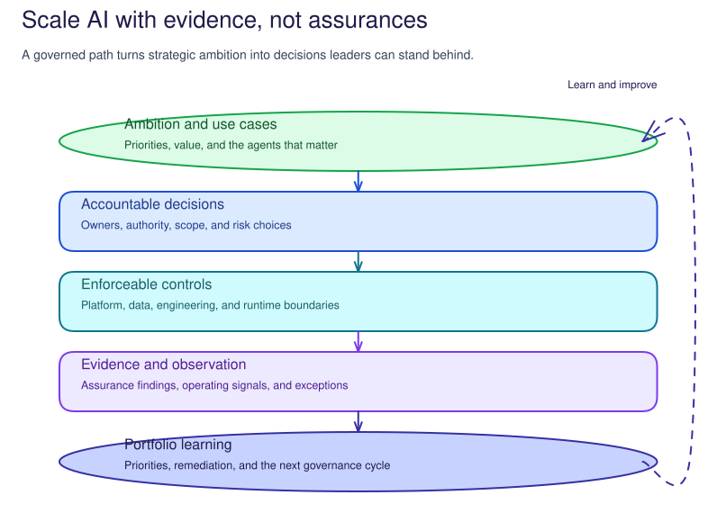

Scale AI with evidence,
not assurances.
RVAS AI Governance helps leaders turn AI ambition into accountable decisions, enforceable controls, and evidence they can use to scale with confidence.
The S0-S12 curriculum gives the customer a practical path from priority use cases to owned decisions, observed controls, and portfolio learning.

Turn the story into a delivery path.
Use these three guides to explain the programme, prepare the people and delivery path, then run a working session.
Explain the governance problem and the decision, role, and evidence outcome of each session.
Confirm ownership, readiness, safety, S0 baseline work, and the sequence for the customer.
Run a bounded pilot from room setup through customer action, interpretation, decision, and handoff.
Thirteen sessions, one evidence-led curriculum.
Each runbook covers the prerequisites, co-delivery walkthrough, verification, evidence capture, rollback, and facilitator notes. Its companion Concepts page explains why the work matters.